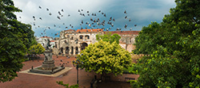

Welcome to Our Travel Blog

Our Journey
We created Sunsets & Suitcases to document our unforgettable trip to the Dominican Republic. From white sand beaches to vibrant local culture, this blog captures everything we experienced along the way.
Why Visit the Dominican Republic?
The Dominican Republic offers the perfect mix of relaxation and adventure. Whether you're chasing sunsets or exploring new cultures, there's something here for everyone.
Top Highlights
- Beautiful beaches in Punta Cana
- Historic streets of Santo Domingo
- Crystal-clear waterfalls and nature hikes
Follow our journey as we explore the best spots.
We'll share tips, history, and must-see destinations.
Travel Tips
- Pack light, breathable clothing
- Stay hydrated in the tropical heat
- Learn a few basic Spanish phrases
Key Travel Info
- Punta Cana
- A popular destination known for resorts and beaches
- Santo Domingo
- The capital city with rich history and culture
- All-Inclusive Resort
- A hotel package that includes meals, drinks, and activities
Contact us: Call 1-800-123-4567
Learn more about travel: Official DR Tourism • Lonely Planet Guide